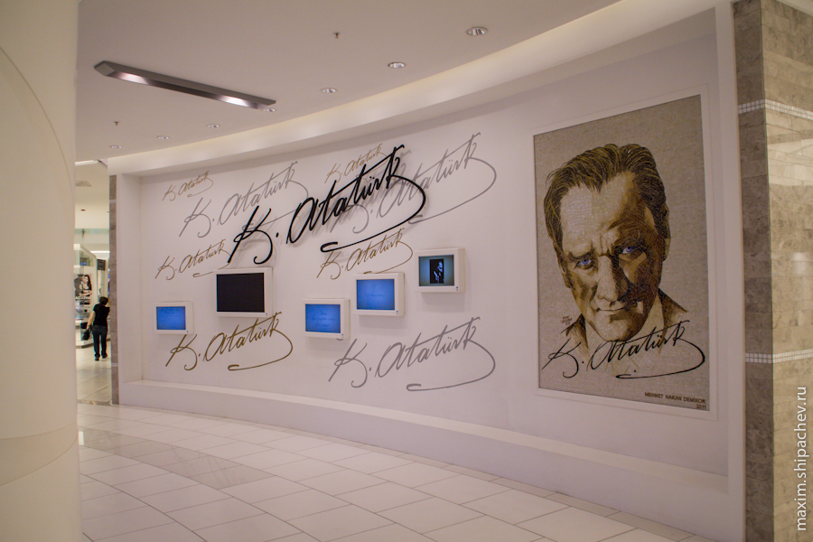

Утро началось с очередного переезда. Вчера мы вроде как подстраховались, и вроде как нашли жильё, в котором планировали остановиться дня на четыре. Вновь собрали рюкзаки и пошли до гостиницы, в которой нас ждал оплаченный пока на 2 ночи номер «Истикляль».


При более близком знакомстве, я понял, что номер, в котором мы остановились, напоминает номер в мотеле в Перми, где мы ночевали в прошлом году.
Грязные окна, храп соседей, слышный из коридора, одеяла без пододеяльников, отстутсвие гусака в душе, (впрочем, зачем он нужен, если не было ещё и горячей воды( вентиляцией в туалете служило просто зарешёченное отверстие в стене. Особую пикантность придавало то, что дырка эта выходила аккурат на мечеть, и несколько раз в сутки короб душетуалета не только наполнялся призывом муэдзина к молитве, но и усиливал этот многократно отражённый от кафельных стен призыв.
Когда через два дня на ресепшне меня спросят, почему мы не стали жить здесь 4 дня как планировали, я скажу, что в номере нет WiFi.
В планах — посмотреть что из себя представляет паромная переправа в Азию. Да и сам азиатский Стамбул тоже было бы неплохо посмотреть.
Спускаемся до пристани Эминёню, тратим минут 15 на понимание технологии функционирования паромов, как части городского общественного транспорта. Паромы в азиатский Кадыкёй ходят каждые 15 минут, паромы вообще в Стамбуле основной вид транспорта, который связывает два континента. Стоимость такая же как и в метро или трамвае, но жетоны другие. Поэтому ещё раз рекомендую купить проездной (акбиль).

Внутри паромы бывают сильно разные. Есть, по комфорту, аналоги наших электричек, есть и паромы с полумягкими сиденьями, затемнёнными стёклами, телевизорами и баром. Тут как в поездке до Новосибирска на автобусе — как повезёт.
Впрочем, переправа на пароме занимает минут 15-20, так что дискомфортом сложно испортить настроение в любом случае.


Спустя 15 минут путешествия удивительные метаморфозы происходят с ценами на «туристические» товары. Они уменьшаются вдвое.
В идеале, сегодня мы хотели сплавать ещё и «на острова» или как их называют в Стамбуле, Адалар, но паромы туда ходят значительно реже, к тому же Кадыкёй — промежуточная остановка, а значит паромы до «островов» набиты уже людьми.

Изучаем расписание, решаем плыть на острова завтра от конечной пристани Бешикташ (там есть гарантия, что мы займём комфортные места), а сегодня «погуляем по Азии».

В Стамбуле максимально лояльно относятся к собакам и кошкам. Кошек просто много, а в отношении собак действует целая программа. Всех бездомных собак отлавливают, затем помещают в специальные клиники, оказывают простую медицинскую помощь, диагностируют болезни, стерилизуют. На специальный чип записывают информацию о том, где была выловлена собака, чем больна. Затем этот микрочип прикреплят к уху собаки и отвозят её к тому месту, где она была поймана. С 2006 года, когда началась эта программа, таким образом были обработаны несколько десятков тысяч собак. Даже комментировать нечего.

На площади у пристани Кадыкёй я наконец решаю разобратся с использованием стамубульских проездных (акбилей). Покупаю его за 8 лир, кладу на него 20. Теперь попутешествуем. Углубляемся внутрь района, и сразу попадаем… правильно на очередной рынок.
В отличие от туристического Султанахмета, в азиатской части во время молитв верующие располагаются прямо на улице.

Мы же, пьём кофе, невежливо глазея на верующих

Возвращаемся к пристани. Садимся на паром, который плывёт до конечной остановки трамвая — района Кабаташ.

Домой возвращаться ещё рано, поэтому решаем сделать ещё небольшой круг. Садимся на автобус, едем до района Levent, ориентир — троговый центр Akmerkez.

В стамбульских автобусах, всё приятно интуитивно понятно. Во всех автобусах установлены подобные мониторы, в которых показывается следующая остановка и маршрут целиком. Самый длинный автобусный маршрут у нас ещё впереди )




Вряд ли российский банк мог выбрать барана в качестве логотипа, но у одного из самых крупных турецких банков символом является именно он. Что для нас олицетворение глупости и упрямства, для турков символ мужества, огня и даже сексуальной энергии.
Идём по пафосному Левенту до уже знакомого нам Metrocity.
Оттуда едем на метро до Таксима, от Таксима пешком идём до Султанахмета.